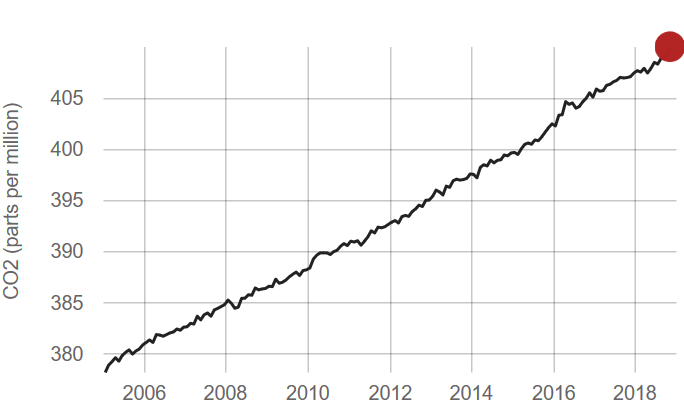

This is the Real World of Today.
Global issues in the world of today are Pollution.


Global issues in the world of today are Pollution.
The rate of CO2 levels increased by 100 to 200 times more faster over the last 10 years
Global CO2 concentration stands currently at 406.4spm
The rise of CO2 concentration in the atmosphere contributes to global warming.
With polar ice caps melting four times faster because of the rise of CO2 levels, many land animals have died such as the famous polar bear.

A possible sollution that we have come up with to this global problem involves the use of technology. Such technology would be the use of drones to filter out carbon dioxide from the atmosphere.
Well we can use solar power to make these drones free of fossil fuels.